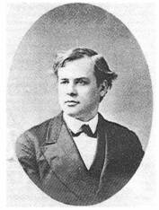

Born at Malden, MA, his
father being a Congregational pastor. He graduated from Brown University,
Providence, RI, in 1807 and opened a school. He wrote an English grammar and
mathematics textbook for girls. He then attended Andover Theological
Seminary. studying Hebrew, Greek, and Latin. His friend, Jacob Eames, turned
him from religion, but Eames died suddenly, and he Judson, shocked, turned
back to God in 1808. In 1809 he became interested in missions. In 1810 he
was licensed to preach by the Orange Vermont Congregational Association,
preparatory to pastoral ministry. However, he had inclinations to overseas
ministry, and, having failed to get an appointment from the London
Missionary Society, persuaded the American Board of Commissioners for
Foreign Missions (ACBFM), to send him and his wife, Ann Hasaltine, and six
others, as Baptist missionaries to India. They departed in 1812 on a 4-month
voyage to Calcutta. Enroute, Ann miscarried their first child. Arriving
there, having studied Baptist principles enroute, they decided to be
baptized. They were, and they resigned from ABCFM, laying plans for creation
of a Baptist Missionary society from the U.S. After experiencing various
hindrances from the East India Company, they escaped India, and began
mission work in Rangoon, Burma (now Myanmar) in 1813, becoming the first
mission of American Baptists (where Judson labored for almost 40 years).
They spent three years learning the Burmese language with the help of a
tutor. They evangelized and did Bible translation. They spent 12 years
making 18 converts from Buddhism. In 1817 a printing press came from America
and a printer, George Hough, and his wife. They printed the first Christian
tracts in the Burmese language, including 800 copies of the book of Matthew,
translated into Burmese by Judson. That helped in gaining converts. In 1824,
Rangoon having been taken by the British, Dr. Judson was charged with being
a British spy and was held captive by the natives until the Burmese
capitulated to the British in 1826. Thanks to his sickly wife’s efforts he
was released after 21 months in squalid prison conditions, and was pressed
to serve as a translator for the Burmese government during negotiations for
the Treaty Yandobo. His wife died that year from complications of smallpox.
In 1828 he moved his mission efforts to Moulmein, where, with help from a
Jonathan Wade, he built a church and school and continued work on the
Burmese Bible. He married Sarah Hall Boardman, widow of his late colleague,
G D Boardman, who died at sea. She was a gifted linguist and teacher. He
finished translating the Burmese Bible, after 24 years, in 1834, and he and
wrote several tracts in that language. After the birth of her 8th child
(most with her former husband), Sarah’s health declined, and they embarked
for the U.S. She died enroute. He completed the trip and remained on
furlough for nine months. He suffered from laryngitis due to pulmonary
illness, and reduced strength, but was hailed a hero throughout the
Christian community. When he talked, he had to use someone who could repeat
his words in order to be heard above a whisper. While at Madison University
in upstate NY, he met and married Emily Chubbock, a writer and educator.
They returned to Burma in 1846 to continue work on an enlarged Burmese
dictionary. It was compiled in 1849. Shortly thereafter, he contracted a
respiratory fever and, while attempting to travel to a better climate for
his health, died at sea in the Bay of Bengal. Most of their children died in
infancy or when young. His legacy included establishing 100 churches, 8000
believers, and encouraging more missionaries to come to Burma after him,
Sarah Cummings, Jason Tuma, and Eleanor Macomber, to name a few. His memoirs
were published in 1853. He also wrote some hymns. Because of his efforts,
Myanmar has the 3rd largest population of Baptist Christians in the world,
behind the U.S. and India. Each July there is a Judson Day in Myanmar.
Accolades given and institutions and organizations named after Judson in
both Myanmar and America are too numerous to name here, but one can look
them up.
John Perry
"COME, HOLY SPIRIT, DOVE DIVINE"
"And Jesus, when He was baptized… saw the Spirit of God descending like a dove,
and lighting upon Him"(Matt. 3:16)
INTRO.:
A hymn which seeks the influence of the Holy Spirit in the lives of those who
are baptized is "Come, Holy Spirit, Dove Divine." The text was written by
Adoniram Judson, who was born on Aug. 9, 1788, at Malden, MA, the son of a
Congregationalist minister. Receiving his education at Rhode Island
College (now Brown University), graduating with an A.B. in 1807, and Andover
Theological Seminary, he became one of the first foreign missionaries from
America when in 1812 he and his wife, Anne Hasseltine, sailed for India under
the Congregational Church’s American Board of Commissioners for Foreign
Missions. While studying the New Testament en route, he was convinced
concerning the action of baptism and was immersed after arriving in Calcutta by
English Baptist Missionary William Ward. In 1813, The Judsons were
compelled to leave India by the Brittish East India Company and settled in Burma
(now Myanmar), where he was imprisoned for many months due to a bitter conflict
between the armies of the Burmese and the British. It was not until after
preaching for six years that the first convert was baptized.
In 1829, for the baptism of several soldiers at Maulmein in British Pegu, he
produced a seven-stanza hymn beginning:
"Our Savior bowed beneath the wave, And meekly sought a watery grave;
Come see the sacred path He trod–A path well pleasing to our God."
It was first published in Thomas B. Ripley’sSelection
of Hymns, second edition, in 1831. The altered version most commonly
used today, consisting of the last four stanzas beginning with the seventh,
appeared in Winchell’sCollectionof
1832. In 1834 Judson completed a translation of the Bible into Burmese.
His return to the United States for a year’s furlough in 1845 greatly increased
the interest for missionary activity in this country. His later years were
spent largely in compiling a Burmese-English dictionary and grammar. While
on a sea voyage for his health, he died in the Bay of Bengal on Apr. 12, 1850,
and was buried at sea.
Judson’s hymn has been set to several tunes, including one (Duke Street)
composed by John Hatton that in our books is usually associated with John
Needham’s "Awake, My Tongue, Thy Tribute Bring," and another (Maryton) composed
by Henry Percy Smith that is most often used with Washington Gladden’s "O
Master, Let Me Walk With Thee." However, another tune (Rockingham New)
that fits well with the song was composed in 1830 by Lowell Mason (1792-1872).
The entire hymn was frequently printed in Disciple hymnbooks of the nineteenth
century, including those of Alexander Campbell, but Forrest McCann noted,
"Hymnals of the Stone-Campbell Movement have always changed Judson’s ‘Dove
divine’ (1:1) to ‘Guest divine.’" Among hymnbooks published by members of
the Lord’s church during the twentieth century for use in churches of Christ,
the song appeared in the 1975 Supplement to the 1937Great
Songs of the Church No. 2originally edited by E. L.
Jorgenson. Today, it may be found in the 1986Great
Songs Revisededited by Forrest M. McCann; the 1992Praise
for the Lordedited by John P. Wiegand (all of these beginning
"Come, Holy Spirit, Guest Divine," and having the Hatton tune); and the 1994Songs
of Faith and Praiseedited by Alton H. Howard (using the term
"Dove Divine" and with the Smith tune). For this study, I have taken the
hymn as usually found with stanzas 7, 4, 5, and 6, then added the omitted
stanzas 2 and 3.
The song reminds us that the Holy Spirit, as a member of the godhead, is active
in our conversion too.
I. Stanza 1 encourages us to praise the Lamb for sinners slain
"Come, Holy Spirit, Dove divine, On these baptismal waters shine,
And teach our hearts, in highest strain, To praise the Lamb for sinners slain."
(Ripley changed the second line to "On us with beams of mercy shine"–
but most books today return to Judson’s original.)
A. While we do not look for the Holy Spirit to come in as literal a fashion as
He did at Jesus’s baptism, the Bible does teach that those who repent and are
baptized do receive the gift of the Holy Spirit: Acts 2:38
B. The Holy Spirit does teach us, and the means by which He does so is the word
which His sword or means of operation: Eph. 6:17
C. One thing that He teaches us is to praise the Lamb for sinners slain: Jn.
1:29
II. Stanza 2 encourages us to to embrace Christ’s cause
"We love Thy name, we love Thy laws, And joyfully embrace Thy cause;
We love Thy cross, the shame, the pain, O Lamb of God for sinners slain."
A. In baptism, we show that we love Christ’s name and His laws because those
who love Christ will keep His commandments: Jn. 15:14
B. Baptism is the act in which we joyfully embrace His cause because when we
are baptized into Christ, we put on Christ: Gal. 3:26-27
C. We love His cross, the shame, and pain, in the sense that we glory in what
He did for us there: Gal. 6:14
III. Stanza 3 encourages us to seek the cleansing blood of Christ
"We sink beneath Thy mystic flood; O bathe us in Thy cleansing blood.
We die to sin, and seek a grave With Thee beneath the yielding wave."
(The original read "We plunge beneath the mystic flood; O plunge us in Thy
cleansing blood."
Some books read, "We sink beneath the water’s face, And thank Thee for Thy
saving grace.")
A. We sink beneath the mystic flood because we are buried with Christ in
baptism: Col. 2:12
B. In baptism, it is the blood of Christ that cleanses us from our sins: Eph.
1:7
C. Thus, it is baptism that we die to sin and are buried in that watery grave:
Rom. 6:3
IV. Stanza 4 encourages us to rise that we might live with Christ
"And, as we rise, with Thee to live, O let the Holy Spirit give
The sealing unction from above, The breath of life, the fire of love."
(Great Songs Revised changes "The sealing unction" to "Our God’s anointing."
Other modern books change "The breath of life" to "The joy of life.")
A. Having died and been buried, we then rise to walk in newness of life: Rom.
6:4
B. As new creatures, we look to the Holy Spirit to give us the sealing unction
or anointing from above, which I understand to be the guidance and direction
that He provides through the written word: 1 Jn. 2:27
C. This was symbolized when Jesus breathed on the disciples and said that they
would receive the Holy Spirit: Jn. 20:22
V. Stanza 5 encourages us to hear and follow Christ
"His voice we hear, His footsteps trace, And hither come to seek His face,
To do His will, to feel His love, And join our songs with songs above."
A. We must listen to the voice of Jesus: Matt. 17:5
B. Having heard Him, we must trace His footsteps: 1 Pet. 2:21
C. It is only when we do the will of the Father that we can hope to join our
songs with those above: Matt. 7:21
VI. Stanza 6 encourages us to look forward to being around the throne in heaven
"Hosanna to the Lamb divine! Let endless glories round Him shine;
High o’er the heavens for ever reign, O Lamb of God, for sinners slain."
A. "Hosanna" is a word of praise that literally means, "Save, we pray": Matt.
21:9-15
B. We should praise Jesus because glories round Him shine as He reigns high
over the heavens: Acts 2:30-32
C. But we also praise Him because He is the Lamb of God who was slain for us:
Rev. 5:6-10
CONCL.:
And as usual, many modern books "update" the language by changing "Thy" to
"Your" and "Thee" to "You." Those who feel that songs addressed to the
Holy Spirit are unscriptural will certainly not care for this song.
However, we do not have a large number of songs that were specifically written
for baptism, and those who believe that there is no scriptural principle
violated by addressing a song to the Holy Spirit that simply calls upon Him to
do what the scriptures teach that He will do, might find that this song,
understanding the figurative nature of its language, could be useful when one is
baptized to ask, "Come, Holy Spirit, Dove Divine."
緬甸是一個虔誠的佛教國家。如今雖仍然是信奉佛教，但根據耶德遜時代相比，已有不少基督徒。當耶德遜進入緬甸時，沒有一個基督徒。1850年他離世時（62歲）緬甸已有七千多基督徒。耶德遜前在仰光建立的第一間教會，就是現在的吳諾（緬甸第一位基督徒）紀念堂。今天的仰光大學裡能看到一所耶德遜紀念教堂（Judson
Memorial Baptist Church）。
Pastor, author, poet, hymn writer, educator, social reformer, and missions
leader

Born in New Hampton, New Hampshire, Gordon graduated from Brown University
(1860) and Newton Theological Institution (1863). From 1869 to 1895 he was
pastor of the Clarendon Street Baptist Church of Boston, Massachusetts, where he
promoted the cause of foreign missions. On the executive committee of the
American Baptist Missionary Union (ABMU) from 1871, and chair after 1888, Gordon
stimulated Baptist Missions expansion. One of the most influential evangelical
leaders of his era, he made an impact on missions well beyond Baptist circles
through his writing and speaking. In 1884 he negotiated the ABMU takeover of the
Congo River Livingstone Inland Mission, founded in 1878 byH.
Gratten Guinness. In 1886 he addressedDwight
L. Moody‘s Northfield Conference when the initial 100 student volunteers
launched what became the Student Volunteer Movement. At the 1888 London
Centenary Conference on the Protestant Missions of the World, Gordon emerged as
an international apologist for missions and toured Scotland to advance the
cause. In 1889 he founded the Boston Missionary Training Institute, one of
America’s first Bible schools, which graduated fifty missionaries in its initial
decade and later evolved into Gordon College and Gordon-Conwell Theological
Seminary.
Gordon’s mission theory, largely premillenial in emphasis, was expounded in his
books, includingThe Ship Jesus(c.
1884) andThe Holy Spirit in
Missions(c. 1893), and in articles in his journalThe
Watchword, and inMissionary
Review of the World, of which he was associate editor after 1890. Rejecting
optimistic, civilizing colonialist theories popular in the imperial era of
missions, Gordon separated Christianity and culture and questioned the efficacy
of Western colonialism. To hasten the Second Coming of Christ, he advocated
worldwide evangelization and indigenous church planting over against incremental
institutional approaches. Though a loyal denominationalist, he viewed the
decentralization of missions and the rise of “faith mission” as efficient ways
to enlist the human and financial resources of local congregations. An outspoken
advocate of women in ministry, he welcomed females and minorities to his
training school and to the larger mission enterprise.
Thomas A. Askew, “Gordon, Adoniram Judson,” inBiographical
Dictionary of Christian Missions, ed. Gerald H. Anderson (New York:
Macmillan Reference USA, 1998), 251.
1789年，克里28歲，成為萊塞斯特（Leicester）浸信會的牧師。3年後，在1792年他發表了著名的宣教宣言：《基督徒向異教徒傳福音之義務的探索》（An
Enquiry into the Obligations of Christians to use Means for the Conversion
of the Heathens）。
接著他成立了“特定浸信會向異教徒傳福音差傳會”。（所謂特定浸信會是基督在十字架上只為特定揀選的人代死的一支浸信會）。後來這個差會改名為浸信會差傳會（Baptist
Missionary Society），2000年更改為”BMS 世界差會：（BMS World Mission）。